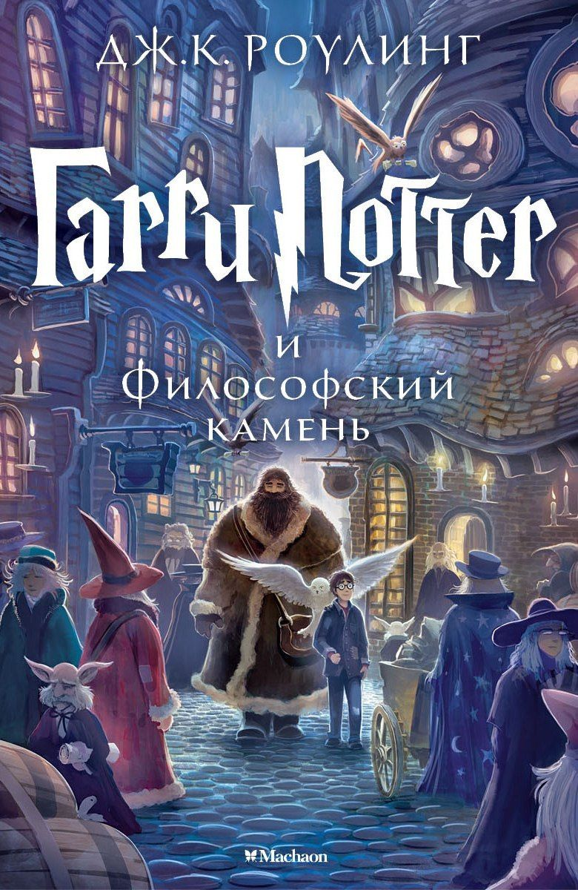

Гарри Поттер и философский камень
11-летний Гарри узнает, что он волшебник, отправляется в Хогвартс, находит друзей Рона и Гермиону и предотвращает кражу философского камня, за которым охотится возрожденный Волан-де-Морт.
Добро пожаловать в городскую библиотеку! Здесь Вы найдете множество книг на свой вкус и сможете ненадолго отвлечься от экранов электроники в спокойной обстановке.